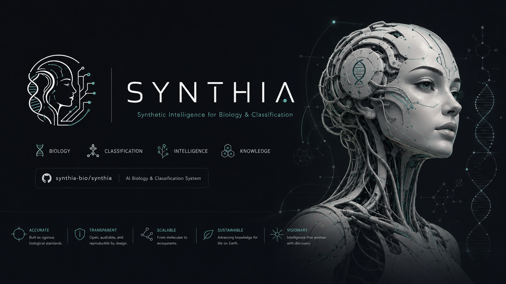

Initialize the engine
Run the local command and produce a public-safe candidate trace without exposing private workspace material.
Tier 4 - Synthetic intelligence - Public pre-alpha
Synthia
Synthetic Intelligence for Biology & Classification
Synthia combines lexical intelligence, biological classification, and neutrosophic review to keep scientific memory traceable, source-bound, and ready for human validation.

Run the local command and produce a public-safe candidate trace without exposing private workspace material.
Keep source objects, terms, relations, and unresolved layers attached to the memory packet.
Represent truth, indeterminacy, and falsity without flattening uncertainty into a single confident answer.
Publish a static Trace Lab surface with JSON provenance and a clear human-review boundary.
Specialized language models for scientific terms, semantic extraction, disambiguation, and contextual relationships.
Structure candidate knowledge across taxonomies, source layers, and ontology-aware review boundaries.
Neutrosophic analysis keeps truth, indeterminacy, falsity, and review status explicit.
Modular architecture combining lexical intelligence, biological rules, knowledge networks, and neutrosophic calculation for robust, explainable candidate memory.
ExplainableModularResilientAdaptiveGlobal uncertainty level: 18%
Evidence is presented as traceable support, not as final scientific authority.
Evidence enters as bounded public objects.
Terms and relations remain explicit.
Contradiction and uncertainty stay visible.
The trace is prepared for human review.
python -m synthia_core.cli taxonomy aburria-packetThe public landing is static and public-safe. It exposes no private evidence, API key, Gmail, Drive, or workspace secrets.
Theme, contrast, text size, reduced motion, Autism Calm, ADHD Sprint, and Deep Work apply to the full page and are stored locally only.
SEL-2.0 supports education, research, simulation, classroom training, and supervised learning.
Open the Trace Lab, inspect the public JSON, or review the source repository.